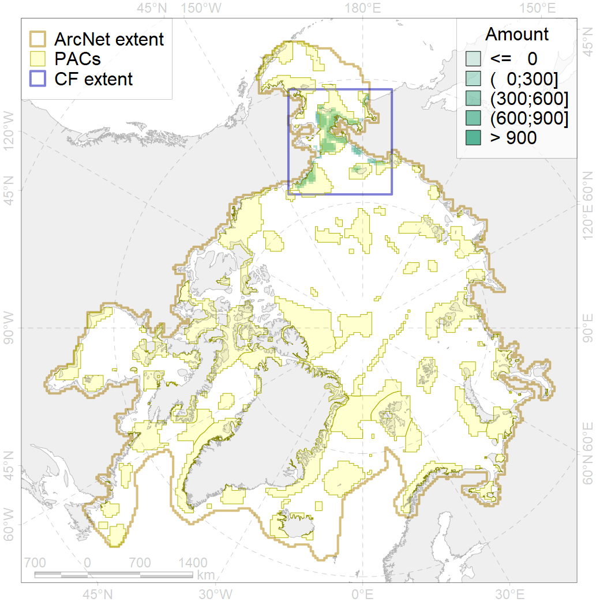
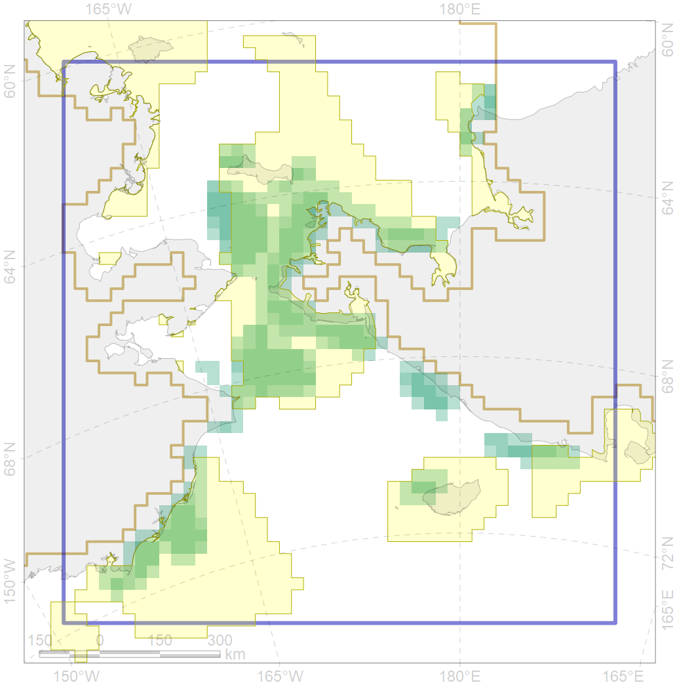

5052

| CF ID | 5052 |
| CF Name | Gray whale summer feeding areas |
| Time Period | 1980-2017 |
| Source(s) | Clarke & Moore 2002; Moore et al. 2003; Burdin 2004 survey; Highsmith et al. 2007; Heide-Jorgensen et al. 2012; Melnikov 2012; Clarke et al. 2015; Brower et al. 2016; Ferguson et al. 2015; Filatova 2017 survey |
| Seasonality | May-November |
| Depth Horizon | 0-100 |
| Methodology | Ship surveys, modelling |
| Author Name | Filatova |
| Notes | |
| Conservation Target Set in the Scenario | 0.36 |
| Conservation Target Achieved in the Scenario | 0.784 (Scenario: 217.8%) |
| PAC ID | Proportion in the PAC | Contribution to ArcNet Target Achievement | PAC’s Contribution to the Achieved Target |
|---|---|---|---|
| 4 | 1.8% | 4.7% | 2.2% |
| 5 | 63.0% | 165.8% | 76.2% |
| 7 | 2.0% | 5.6% | 2.6% |
| 8 | 2.3% | 3.9% | 1.8% |
| 60 | 14.3% | 35.2% | 16.2% |
| inner | 83.3% | 215.3% | 98.9% |
| outer | 16.7% | 2.5% | 1.1% |